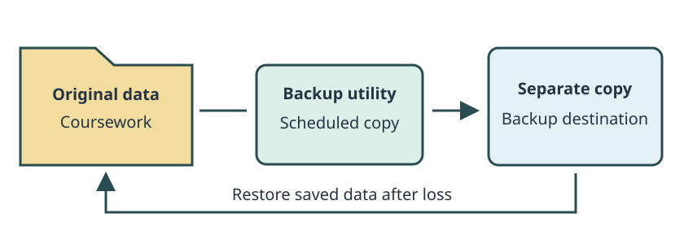
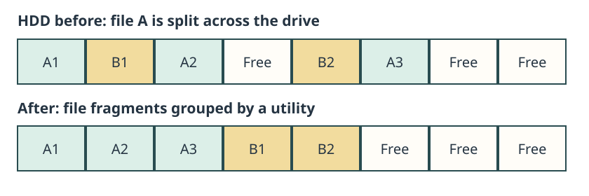
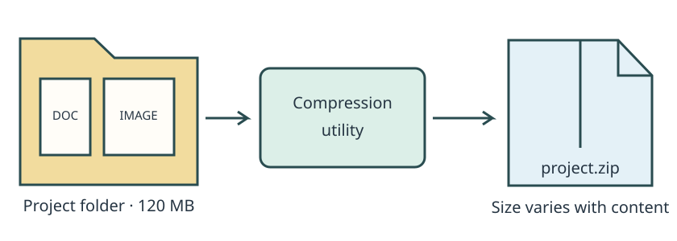
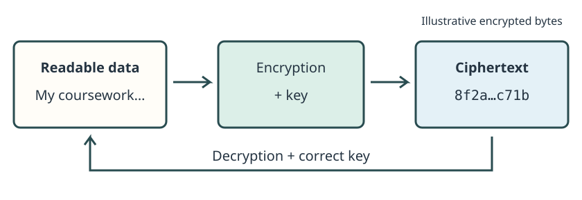
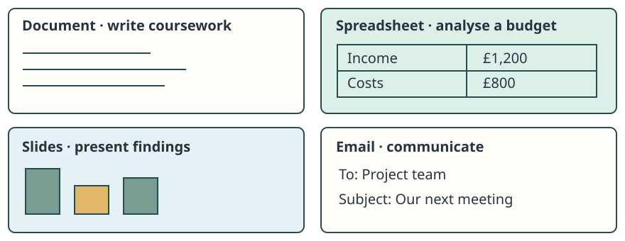
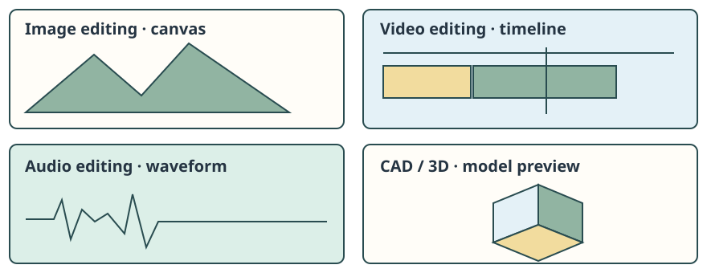

01 · Software
What kind of software are we talking about?
Utility · purpose
Helps maintain, protect, configure or manage the computer system and its data.
Application · purpose
Helps the user perform tasks, such as creating work or communicating.
Open source · licence model
Describes rights around the source code, not the main job of the software.
Utility and application describe what software does. Open source describes source-code and licensing rights.
02 · Software
Purpose vs licence model
| Primary purpose | Open source | Proprietary |
|---|---|---|
| Application | LibreOffice · create documents | Microsoft Word · create documents |
| Operating system | Linux-based OS · manage system resources | Windows · manage system resources |
| Utility | An open-source backup tool · copy data | A proprietary backup tool · copy data |
Open source is not the opposite of application software.
Read across a row: software with the same purpose can have different licence models. Read down a column: open-source software can serve different purposes. Linux is the kernel used in Linux-based operating systems.
Utility software
03 · Software
What is utility software?
Utility software helps maintain, protect, configure or manage the computer system and its data.
- Protect
Check for malicious activity. - Maintain
Manage storage and settings. - Recover
Keep copies that can be restored. - Manage data
Package or protect files.
A utility may be built into an OS or installed separately. Classify it by its main purpose, not where it came from.
04 · Software
Anti-malware
- File or process appears
- Scan and check
- Suspicious pattern or behaviour detected
- Warn, block or quarantine
On-demand scans check selected data. Real-time protection checks activity as it happens. Definitions or signatures identify known patterns; behaviour checks look for suspicious actions. Updates help the tool respond to new threats.
Quarantine
Isolate a suspicious item so it cannot be used normally while it is reviewed.
Trade-off
Scanning uses CPU, memory and storage activity. Protection is valuable, but scan timing and resource impact affect users.
05 · Software
Backup utilities

Backup utilities create separate copies of important data. A schedule can automate copying; restore tools retrieve saved data after loss or damage.
A backup should protect against loss of the original data.
A copy on the same failing drive may be lost too. Check that a saved copy can be restored. Detailed backup strategies are covered in the backup and recovery lesson.
06 · Software
Disk cleanup and storage utilities
- Scan
Inspect storage use. - Identify
Find temporary, cached or unused files. - Review
Check what is safe to remove. - Remove
Free the selected space.
Storage reports help users see what occupies a drive. Cached data may be needed again, so removing it can mean downloading or rebuilding it later.
Disk cleanup removes unnecessary data. Defragmentation reorganises file fragments.
07 · Software
Defragmentation utility

On an HDD, separated fragments can increase head movement. A defragmentation utility reorganises stored fragments to reduce this movement. It is maintenance software, so it is a utility.
Traditional HDD-style defragmentation is not normal SSD maintenance.
The earlier storage lesson explains fragmentation; here the focus is the software that performs the maintenance.
08 · Software
Compression utilities

ZIP-style utilities can reduce storage or transfer size and package multiple files into one archive. Extracting a lossless archive restores the original files.
Already-compressed images or video may shrink very little. An archive is not automatically encrypted, and compression is not a backup strategy.
09 · Software
Encryption utilities

Encryption utilities can protect files or drives by converting readable data into ciphertext. This helps protect confidentiality if a file or device is stolen or accessed without permission.
The correct key, or credentials that unlock it, is needed to restore readable data.
Losing access to the key can mean losing access to the data. Algorithms and key management are explored elsewhere.
10 · Software
Utility software recap
| Utility | Main job | Useful feature |
|---|---|---|
| Anti-malware | Protect against malicious software | Scanning, updates, quarantine |
| Backup | Create recoverable copies | Scheduling and restore |
| Disk cleanup | Remove unnecessary stored data | Storage reports and review |
| Defragmentation | Reorganise fragmented HDD data | Arrange fragments to reduce head movement |
| Compression | Reduce or package files | Create and extract archives |
| Encryption | Protect data confidentiality | Encrypt and decrypt using a key |
Application software
11 · Software
What is application software?
Application software primarily helps users perform tasks.
Utility
Looks after the system or data: for example, backing up a project.
Application
Helps the user do work: for example, editing the project’s images.
Ask what the software is mainly doing.
A package can contain mixed features. An image editor does not become a utility simply because it can compress an exported picture.
12 · Software
Productivity applications

Create work
Word processing for coursework; spreadsheets for calculations and budget analysis.
Share findings
Presentation software for explaining results; email for written communication.
These are applications because their main job is the user’s work, rather than maintaining the computer.
13 · Software
Creative and media applications

Create and edit
Image editors adjust pictures; video editors arrange footage; audio editors work on recordings.
Design
CAD and 3D tools help create models, plans and designs.
Large creative projects can need more CPU, RAM, GPU or storage performance. Match requirements to the workload; not every creative task needs the same hardware.
14 · Software
Communication and collaboration
- Message
Coordinate with a project group. - Meet
Discuss work in a video call. - Co-edit
Work on a shared document. - Organise
Assign tasks on a team board.
Messaging, conferencing, collaborative documents and project tools are application software. Their primary purpose is helping people communicate and work together.
Categories overlap: email supports both productivity and communication. Explain the task rather than forcing each package into one narrow label.
15 · Software
Specialist application software
Business operations
Accounting, booking, stock-control and point-of-sale systems support particular business processes.
Healthcare
Appointment and patient-record systems organise specialist clinical workflows and information.
Design and engineering
CAD tools provide measurements and modelling features that a general word processor cannot replace.
Technical careers
IDEs support software development; data-analysis tools support AI/data work; investigation tools can help analysts examine evidence.
Application software can be highly specialised.
Classify by the tool’s main job: an analyst’s evidence-analysis application and an anti-malware protection utility serve different primary purposes.
16 · Software
Utility or application?
Choose the category and the purpose that supports it. Some packages contain mixed features; use the main job described here.
Photoshop editing a poster
A backup tool copying project files
Anti-malware monitoring downloads
Visual Studio Code editing a program
A spreadsheet calculating a budget
Disk cleanup removing temporary files
Open source software
17 · Software
What is source code?
Source code is the human-readable program code used to create software.
total = price * quantity
print(total)A programmer can read and change these instructions.
- Source code
Instructions written by people. - Language tools
Compile or interpret the instructions. - Running software
The computer performs the task.
Being able to run a program does not automatically mean you receive its source code or permission to change and share it.
18 · Software
What does open source mean?
Open-source software provides source code under a licence allowing use, inspection, modification and redistribution, subject to its terms.
- Inspect
Read how it works. - Modify
Adapt the code. - Redistribute
Share under the licence conditions.
Source access alone is not enough: a licence that only lets you look at the code is not necessarily open source. Conditions differ, so open source does not mean “do anything you want”.
Developers may include individuals, communities and businesses. Open-source projects can have commercial contributors and paid support.
19 · Software
Purpose vs licence model revisited
| Primary purpose | Open source | Proprietary |
|---|---|---|
| Application | LibreOffice · create documents | Microsoft Word · create documents |
| Operating system | Linux-based OS · manage system resources | Windows · manage system resources |
| Utility | An open-source backup tool · copy data | A proprietary backup tool · copy data |
Open source is not a software-purpose category.
Classify an open-source backup utility on both axes
Utility + open source. Its job is keeping recoverable copies; its licence grants source-code rights. It does not stop being a utility.
20 · Software
Open-source strengths
Transparency and adaptation
Access to source can support inspection and modification where the organisation has the skills.
Contribution
Users, communities and companies may contribute fixes and improvements.
Costs and independence
Some options reduce licence spending and dependence on one vendor. Open formats and available expertise also matter.
Operation and support
Some products can be self-hosted or supported internally, or through a paid provider. This depends on the product and resources.
These are possibilities, not guarantees. Available source does not mean every organisation can maintain a complex system alone.
21 · Software
Open-source considerations and risks
Maintenance and support
Check project activity, release history and who will provide help. Community and commercial arrangements vary.
Expertise
Internal staff may need skills to configure, update or customise the software.
Compatibility and migration
Test real files, integrations and workflows. Conversion and training can cost time and money.
Continuity
A project may change direction or become inactive. Source access offers options, but taking over maintenance still requires resources.
Security depends on review, maintenance and use; open source is not automatically more or less secure.
22 · Software
Proprietary software comparison
Potential strengths
A supplier may provide contracted support, clear product responsibility and integration with its wider ecosystem. Some fields rely on its formats and workflows.
Potential limitations
Licences or subscriptions can cost money. Source code is normally unavailable for users to modify, and dependence on a supplier can limit control.
Check the product
Commercial support is not guaranteed with every proprietary package. A supplier can change pricing or end support.
Compare fairly
Open-source products can also have paid support and commercial development. Compare actual features, service and continuity arrangements.
Neither licence model guarantees quality, compatibility or long-term support.
23 · Software
Open source does not mean free
Free of charge · price
No purchase or download charge. Software can be free to use and still closed source.
Open source · rights
Source-code rights are granted by the licence. Open-source software can be sold or offered with paid services.
- Hosting and maintenance
- Support and staff expertise
- Training and migration
A zero licence price is not the same as zero total cost.
Choosing software
24 · Software
Is the most powerful software always best?
A college is choosing video-editing software. These are fictional options, not product recommendations.
Option A
Advanced features, expensive licences, high hardware requirements and a workflow widely used in the industry.
Option B
Lower-cost open-source option, runs on current PCs, fewer specialist features and less familiar to staff.
Which is better? Reveal the missing question
You cannot decide until you know the users, required features and constraints. Can B complete the assessed tasks? Can the college afford A, its hardware and training?
Software suitability depends on context.
25 · Software
User and task factors
Needs and features
Start with the actual work: does an accounting application support the required reports, rather than merely having a long feature list?
Skills and ease of use
Match the complexity to users. Familiar workflows may reduce training and mistakes.
Accessibility
Test whether intended users can operate key features with their assistive tools and access needs.
Productivity
Consider learning time and everyday work. A tool that speeds up an expert may overwhelm an occasional user.
The previous interface lesson compared interaction styles. Here the decision concerns the suitability of the whole software package.
26 · Software
Technical factors
- Run it
OS support and hardware requirements. - Use real work
File formats, data exchange and integration. - Measure the effect
Performance on realistic tasks. - Keep it supported
Security, updates and compatible versions.
A video editor may run but export too slowly for a class deadline. A package may open a file but lose formatting. Test imports and exports, required integrations and update compatibility.
Check access controls and maintenance arrangements for sensitive data. Here OS compatibility means whether the package runs on the existing OS; choosing an OS is a separate topic.
27 · Software
Organisational factors
- Acquire
Purchase, licence or subscription cost. - Introduce
Testing, installation, migration and training. - Operate
Support, maintenance and staff time. - Sustain
Vendor/community continuity and future migration.
Allow implementation time and disruption as well as money. A rushed change can interrupt work; training and a phased rollout may protect productivity.
Compare the total cost and practical impact over time, not only the first invoice.
28 · Software
Choosing anti-malware
A college needs protection for hundreds of PCs while lessons continue.
- Requirement
Consistent protection across rooms. - Feature
Central administration, regular updates and understandable alerts. - Implication
Staff can respond and maintain coverage without visiting every PC. - Choice
Pilot a compatible tool with suitable protection and manageable overhead.
Compare protection quality, update frequency, device compatibility, scan performance and licence/support costs. Schedule scans thoughtfully; the cheapest licence is weak value if classes slow down or alerts cannot be managed.
29 · Software
Choosing video-editing software
Media students must edit camera footage, add titles and export work for assessment on existing PCs.
- Requirement
Required edits and reliable exports. - Feature
Camera-format support, editing tools and suitable GPU/RAM demands. - Implication
Students complete work within class time. - Choice
Test sample footage and exports before selecting a package.
Include ease of learning, licences, support and training. The most advanced editor may waste budget on unused features or require hardware upgrades; a simpler one is unsuitable if it cannot produce the required output.
30 · Software
Choosing an open-source office suite
A college considers replacing proprietary office software with an open-source alternative.
Possible gain
Licence savings and more control may release money for other resources.
Evidence to collect
Test existing documents, templates, spreadsheets and integrations. Check accessibility and staff/student familiarity.
Costs to include
Training, conversion, technical support and disruption can outweigh short-term savings.
Balanced judgement
Pilot with representative users. Migrate where compatibility and support are adequate; retain the current package for essential workflows that fail the pilot.
Justify the decision with tested requirements, not the licence label alone.
Practice
31 · Software
Choose the software
A small indie game studio has five employees, a limited total budget, existing layered PSD files and staff familiar with Photoshop-style workflows. Commercial support is desirable. All options and prices below are fictional.
A · Studio Pro
£25 per person/month: £1,500 a year for five. Excellent PSD compatibility, familiar workflow, advanced features and commercial support.
B · Open Canvas
£0 licence cost, open source. Good but imperfect PSD compatibility, community support and an unfamiliar workflow. Training and conversion still cost time.
C · Sketch Basic
£60 per person once: £300 for five. Low hardware demands and basic editing. Limited advanced features; layered PSD editing is not supported.
Choose an option and the priority that supports it. Then explain a trade-off and a check you would make. There is no universal winner: the budget ceiling and required PSD features still need confirming.
Your recommendation
Your written justification saves in this browser. Feedback compares the selected priority with the option; it does not automatically mark your writing.
32 · Software
Common exam mistakes
“Open source means free”
Separate source-code rights from purchase price and total costs.
“Anyone can do anything”
Open-source licences grant rights with conditions; the terms still matter.
“Applications just mean Office”
Specialist tools also support work in design, business, development and data analysis.
“Utilities are whatever is built into the OS”
Use primary purpose. A utility can be installed separately.
“The most powerful option is best”
Unused features do not justify poor compatibility, excessive costs or unsuitable hardware demands.
Only giving a name
Develop the answer: required file-format and hardware support can reduce conversion and upgrade costs.
33 · Software
Check your understanding
Answer all 14 questions, then check your score. Aim for 10 correct. Your answers and best score save on this device.
34 · Software
Exam-style practice
These are practice tasks with indicative guidance, not an official mark scheme. Develop explanations as requirement → feature → implication → judgement.
Draft answers save automatically in this browser.
Question 1
Explain two functions of utility software.
Show answer guide
- Develop two functions with their effects: for example, backup creates separate recoverable copies so work can be restored after loss.
- A second function could explain anti-malware scanning and quarantine to reduce exposure to malicious software.
- Connect each function to a benefit; naming two utilities alone is insufficient.
Question 2
Explain why specialist application software may be required by an organisation.
Show answer guide
- Apply to an organisation, such as a booking business that needs availability checks and reservation records.
- Explain why general-purpose tools may not provide the required workflow, accuracy or integration.
- Develop the relationship between specialist features and better work; recognise that training or integration may be needed.
Question 3
Discuss advantages and disadvantages of using open-source software in a college.
Show answer guide
- Possible licence savings and adaptation rights may help meet college needs.
- Compare training, support expertise and compatibility with existing work.
- Source access does not guarantee quality or cost-free maintenance.
- Reach a balanced view linked to the college rather than listing generic claims.
Question 4
A small accounting business needs new application software. Analyse the factors it should consider.
Show answer guide
- Connect required reporting features and staff skills to effective daily work.
- Explain how existing data formats and integrations affect conversion effort and continuity.
- Relate access controls, updates and support to protecting financial information and maintaining service.
- Analyse total licence, training and migration costs, implementation time and disruption.
- Explain interactions: a cheap licence may produce higher overall costs if conversion and retraining are extensive.
Question 5
A college is considering replacing its proprietary office software with an open-source alternative. Evaluate whether it should make the change.
Show answer guide
- Identify possible licence savings, source-code rights and reduced dependence on one supplier.
- Evaluate real document/template/spreadsheet compatibility and integrations; failure could disrupt teaching or administration.
- Discuss staff/student familiarity, accessibility, training, technical support and migration effort.
- Balance potential long-term benefits against transition costs and ongoing maintenance; neither model guarantees support.
- Use a pilot or phased migration to gather evidence. A partial change or retaining essential workflows may be justified.
- Conclude conditionally from requirements and evidence. An unsupported feature list or “open source is free” is not enough: explain why the choice fits this college.